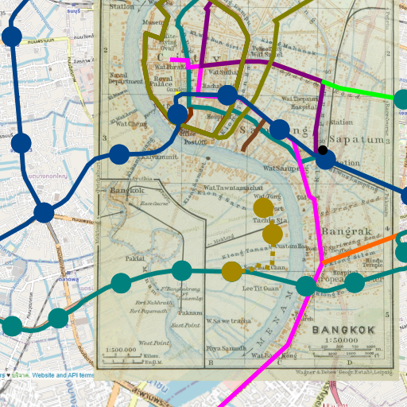

arun > Projects.
Project Bangkok Expansion
blog post 1 | blog post 2
Who
Me, born and raised in Bangkok suburbia
What
This is a project I came up as I travel around in Bangkok, or more accurate as I travel into Bangkok. Bangkok is growing at a very fast rate so I want to look back to the city's origins as well. A major influence to this project was The New York City Evolution Animation.
Where
This project was made mostly in my bedroom.
When
6 August 2020 - ongoing
This is a side hobby/project of mine, so it might take anywhere between a few months to a few years depending on the other things going on in my life.
Why
I haven't really seen one of these lying around on the internet so I figured I might as well make one for fun, for the expansion of my knowledge of Bangkok, and for the benefit of mankind if this ends up somewhere near publishable.
How
I start by tiling screenshots from OpenStreetMap at a few zoom levels into Inkscape. I search all over the internet, mainly starting from Wikipedia, compile some of my findings worthy of inclusion into the Inkscape project file. I line old maps to match the scale and location, and map positions and trace over routes. I plan to document my adventure in blog posts as well.